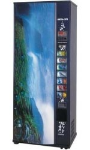

Контактная
информация
информация
Адрес:ул. Явар Алиев 22
Баку, Азербайджан AZ 1026,
Tel.: 012 424 31 48
E-mail: vending@vento.az
Artic 272

Торговый автомат предназначен для продажи охлажденных напитков в банках и пластиковых бутылках. Технические характеристики автомата:
* дисплей отображения информации о кредите, цифровых часов, ценах продуктов;
* платежный механизм J-2000 с функцией возврата сдачи;
* антивандальная защита;
* постоянное самотестирование;
* антикоррозийный корпус;
* 4 доступа программирования и настройки автомата;
* кэш-бокс с замком и повышенной вместимостью;
* семь кнопок выбора и восемь каналов загрузки;
* полная загрузка на 272 банки;
* дисплей для показа кредита, цифровых часов, цены продукта, и выполнения программирования автомата;
* большие клавиши выбора;
* данные продаж для аудита и контроля через RS- 232;
* газ охлаждения R-134A;
* внутренняя температура 3-7 град С.
Дополнительно:
* устройство считывания электронных карт;
* протокол EXECUTIVE;
* банкното-приемник;
* доработка для продаж бутылок 0,5 л и узких банок (энергетические напитки).
Электропитание, размеры и вес:
* 220 V +/- 10 %;
* потребляемая мощность: 600 Вт;
* макс. ток 10 А;
* высота; ширина; глубина 1780 - 725 - 580 мм;
* вес около 220 кг.
Отличительные преимущества аппарата Artic 272:
* антивандальные противовзломные копуса,
* корпус изготовлен из 1,5 мм коррозиеустойчивой стали,
* самые современные платежные системы производства испанской фирмы Jofemar,
* простое программирование цен и продуктов,
* длительный срок эксплуатации.
* небольшие габариты позволяют устанавливать торговый аппарат в офисах,
* герметичная охлажденная камера с постоянной температурой,
* продажа продукции в том же порядке, в котором она загружалась (FIFO).